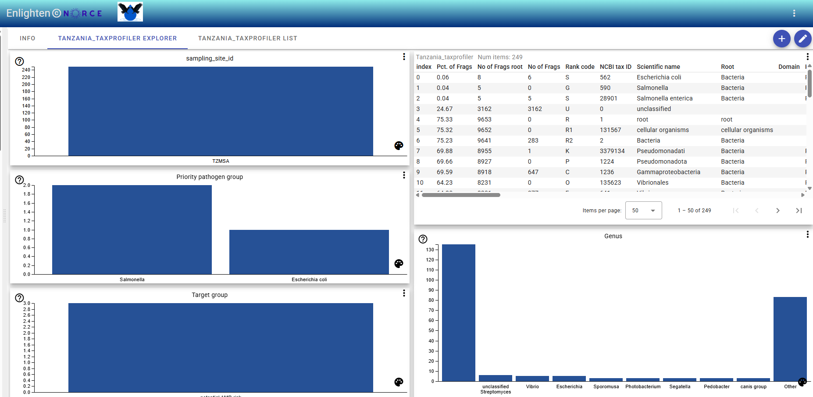

To use the template feature for datasets with the taxprofiler template in the front end:

Locate Your Dataset
In the table view, find the dataset whose name matches the template regex configured in ServerConfig.json.
Find the Template Icon
Next to the matching dataset, look for the template icon:
<mat-icon>open_in_new</mat-icon>
Click the Icon
Click the open_in_new icon to open the taxprofiler template for that dataset.
Explore Bar Charts
In the explorer view, use the interactive bar charts for sampling site, Priority pathogen group, Genus, and Target group to make selections.
View Abundance Data
Select bars to filter and view abundance data at different levels. The display updates according to your selection.
Notes:
- The open_in_new icon only appears for datasets matching the configured regex.
- The taxprofiler template enables interactive exploration by category.
- Selections are reflected in all linked visualizations and tables.
- If you do not see the icon, check your server configuration and refresh the page.
After making a selection in the bar charts, you can download the filtered data as a CSV file:
Go to the Table View
Switch to the table view where your filtered selection is displayed.
Open the Drop Down Menu
Click the drop down menu (often shown as three dots or an arrow) above the table.
Select “Download table (csv format)”
Choose the “Download table (csv format)” option to export the currently filtered data.
This allows you to save and share your selected subset for further analysis or reporting.